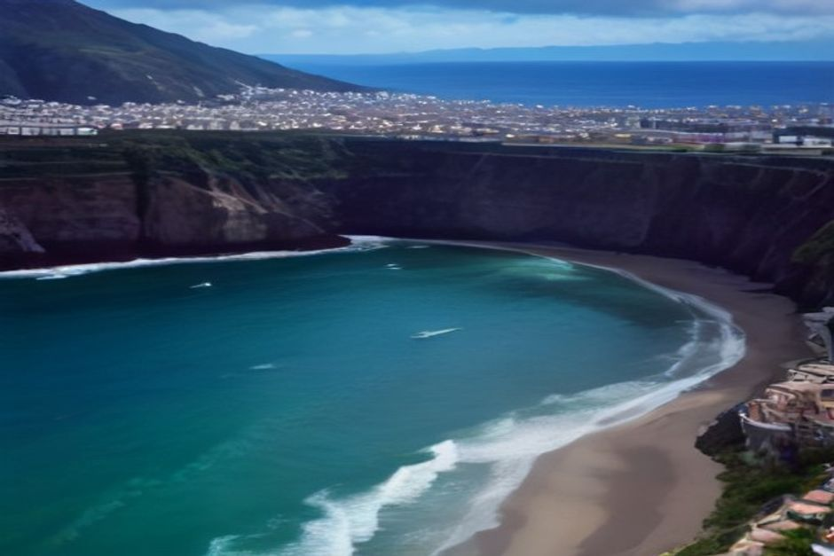
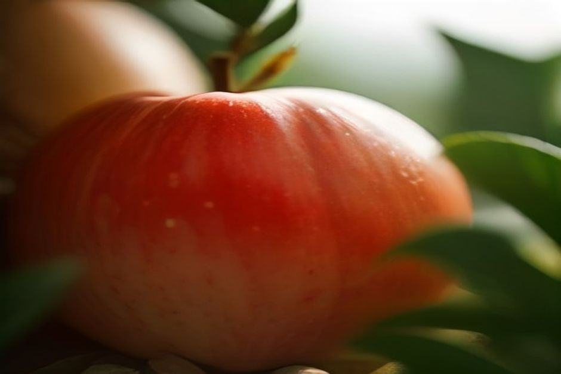

Das Apfelfest auf Madeira heißt Festa do Pêro und findet jedes Jahr im September in Ponta do Pargo statt, ganz im Westen der Insel. Die Ausgabe 2026 war am 19. und 20. September. Hier lesen Sie, wann das Fest beginnt, wo es ist, wie Sie von Funchal hinkommen und was Sie im nächsten Jahr einplanen sollten.
Wann beginnt das Apfelfest, und wann ist das nächste?
Die Festa do Pêro 2026 lief am Samstag und Sonntag, 19. und 20. September. Sie ist also gerade vorbei. Wenn Sie diese Seite im Herbst 2026 lesen, haben Sie den Termin leider knapp verpasst.
Für 2027 steht das Datum noch nicht fest. Verlässlich ist das Muster: Das Fest findet immer im September statt, wenn die örtliche Apfelernte eingebracht ist, und es dauert ein einziges Wochenende. Organisiert wird es vom Gemeindezentrum von Ponta do Pargo (Centro Comunitário). Fragen Sie dort nach, oder schauen Sie im Frühsommer in den Veranstaltungskalender von Madeira, bevor Sie Flug und Mietwagen buchen.
Mein Rat für die Planung: Legen Sie Ihre Reise nicht allein um dieses Fest herum, solange das Datum nicht bestätigt ist. Wenn es klappt, ist es ein schöner Zusatz. Wenn nicht, ist der Westen auch ohne Fest eine Reise wert.

Was ist die Festa do Pêro?
„Pêro" ist das alte regionale Wort für den Apfel, der in dieser Ecke der Insel wächst. Erzeuger aus Ponta do Pargo und den Nachbargemeinden bringen ihre Ernte mit und stellen daneben aus, was daraus entsteht: Marmeladen, Kuchen, Süßigkeiten und Konserven.
Aus einem kleinen Gemeindetreffen ist über die Jahre eines der lebhaftesten ländlichen Feste im Madeira-Herbst geworden. Es ist kein Spektakel für Reisegruppen, sondern ein Dorffest, zu dem Menschen von der ganzen Insel anreisen.
Was erwartet Sie vor Ort?
Das Fest ist eine Freiluftveranstaltung, der Eintritt ist frei. Planen Sie Bargeld für die Stände ein.
- Stände: Äpfel direkt vom Erzeuger, dazu selbstgemachte Marmeladen, Kuchen und Süßigkeiten sowie regionales Essen.
- Musik: Über das Wochenende ein volles Programm mit Folkloregruppen, regionalen Bands und gelegentlich einem bekannten Act aus Portugal.
- Umzug: Der Höhepunkt ist ein allegorischer Umzug. Einheimische tragen traditionelle Kleidung und führen die alten Haus- und Feldgeräte mit, mit denen hier früher das Land bestellt wurde.
Es ist ungeschliffen und echt, näher an einem dörflichen arraial als an einer inszenierten Touristenschau. Genau das macht den Reiz aus.
Wo ist das Apfelfest, und wie kommen Sie von Funchal hin?
Ponta do Pargo liegt an der äußersten Westspitze Madeiras, in der Gemeinde Calheta, hinter Calheta und Paul do Mar. Von Funchal sind es mit dem Auto etwa eine bis anderthalb Stunden, über die ER222 und die ER101.
Eine Buslinie, die auf die Festzeiten abgestimmt wäre, gibt es nicht. Praktisch sind deshalb Mietwagen oder Taxi. Die Fahrt gehört zum Erlebnis: Die ER101 folgt der Südwestküste und steigt dann zum Plateau über den Klippen von Ponta do Pargo an.
Rechnen Sie für den Tag großzügig. Hin und zurück sind es schnell drei Stunden im Auto, bevor Sie einen Stand gesehen haben.
Lohnt sich Ponta do Pargo auch ohne Fest?
Ja. Der Ort ist vor allem für den Farol da Ponta do Pargo bekannt, den Leuchtturm am westlichsten Punkt der Insel. Er steht auf den Klippen mit offenem Blick auf den Atlantik und gilt als einer der Orte mit den schönsten freien Sonnenuntergängen Madeiras.
Außerhalb des Festwochenendes ist die Gegend still: Terrassen mit Bananen und Wein, Steinmauern, kaum andere Besucher. Das ist eine ganz andere Seite Madeiras als die belebte Südküste um Funchal. Wer Ruhe sucht, ist hier richtig.
Apfelfest und Küste: So teilen Sie die Tage ein
Ponta do Pargo liegt weit jenseits des Küstenabschnitts, den ein privates Boot ab der Marina do Funchal erreicht. Beides an einem Tag zu verbinden ist nicht möglich. Mein Vorschlag ist deshalb, dem Westen einen eigenen Tag mit dem Auto zu geben, für Fest und Leuchtturm, und einen zweiten Tag für das Wasser.
Für diesen zweiten Tag bietet Chifbay private Bootstouren ab Marina do Funchal, Steg C. Das Boot gehört nur Ihrer Gruppe, bis zu 5 Gäste, mit zwei lizenzierten Skippern aus Madeira. Die Preise gelten für das ganze Boot, nicht pro Person.
- Tagestour (Start um 10:00 oder 14:00): 2 Std. 30 bis Ribeira Brava für 500 EUR, oder 3 Std. bis Ponta do Sol für 600 EUR. Mit Câmara de Lobos, Cabo Girão sowie Badestopp und Paddleboards an der Fajã dos Padres. Mehr dazu unter Tagestour.
- Sonnenuntergangsfahrt: Start 1 Std. 15 vor Sonnenuntergang, das ganze Jahr. 2 Std. bis Cabo Girão für 400 EUR, oder 2 Std. 30 bis Ribeira Brava für 500 EUR, ohne Badestopp. Mehr unter Sonnenuntergang privat.
Essen und Getränke an Bord, ein 360°-Video mit der Insta360, Drohnenaufnahmen (wenn das Wetter es erlaubt) und Fotos mit einer richtigen Kamera sind bei jeder Tour dabei. Bis 24 Stunden vor Abfahrt können Sie kostenlos stornieren. Einen Überblick über alle Möglichkeiten finden Sie unter Erlebnisse und bei den Bootstouren auf Madeira.

Praktische Tipps für Ihren Besuch
- Datum prüfen: Bestätigen Sie den Termin beim Gemeindezentrum, bevor Sie buchen.
- Früh losfahren: So haben Sie Zeit für die Stände und den Leuchtturm, ohne in Eile zu geraten.
- Bargeld mitnehmen: Die Stände sind kleine Erzeuger- und Imbissstände.
- Jacke einpacken: Auf dem Plateau über den Klippen kann es spürbar anders sein als in Funchal.
- Fahrer bestimmen: Wer probieren möchte, sollte nicht selbst fahren. Ein Taxi ist eine Option.
Madeiras größte Feste finden in Funchal statt. Die besten Geheimtipps liegen in Gemeinden wie dieser.
Fällt Ihre Reise in ein Septemberwochenende, ist die Festa do Pêro ein echter lokaler Nachmittag und ein guter Grund, den stillen Westen der Insel zu sehen. Weitere Hinweise zur Planung finden Sie unter Praktische Infos und im Journal.